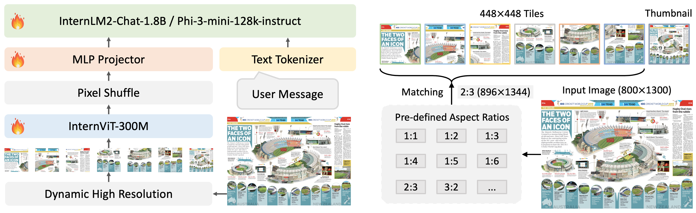

Mini-InternVL 1.5: Super Small Model But with Competitive Performance
| Type | Model | Date | Download | Note |
|---|---|---|---|---|
| Vision Large Language Model | Mini-InternVL-Chat-2B-V1-5 | 2024.05.19 | 🤗 HF link | 🚀🚀 Only 2B parameters, anyone can deploy it locally. |
| Vision Foundation Model | InternViT−300M−448px | 2024.05.25 | 🤗 HF link | Distilled small vision foundation model with 300M parameters. |
We are delighted to introduce Mini-InternVL-Chat-2B-V1-5. In the era of large language models, many researchers have started to focus on smaller language models, such as Gemma-2B, Qwen-1.8B, and InternLM2-1.8B. Inspired by their efforts, we have distilled our vision foundation model InternViT-6B-448px-V1-5 down to 300M and used InternLM2-Chat-1.8B as our language model. This resulted in a small multimodal model with excellent performance.
As shown in the figure below, we adopted the same model architecture as InternVL 1.5. We simply replaced the original InternViT-6B with InternViT-300M and InternLM2-Chat-20B with InternLM2-Chat-1.8B. For training, we used the same data as InternVL 1.5 to train this smaller model. Additionally, due to the lower training costs of smaller models, we used a context length of 8K during training.
From the experimental results, we've observed that our distilled small vision model (InternViT-300M) is well-suited for a smaller language model (1.8B). This combination maximizes efficiency while maintaining impressive performance across various benchmarks, demonstrating the effectiveness of small models in handling complex tasks. Additionally, our small model significantly reduces memory requirements, making it more accessible and efficient for practical use.
Performance
| model | open- source |
#param | DocVQA (test) |
ChartQA (test) |
InfoVQA (test) |
TextVQA (val) |
OCR Bench |
MME | RWQA | AI2D (test) |
MMMU (val) |
MMB−EN/CN (test) |
CCB (dev) |
MMVet | SEED (image) |
HallB | MathVista (mini) |
|---|---|---|---|---|---|---|---|---|---|---|---|---|---|---|---|---|---|
| GPT-4V | ✗ | - | 88.4 | 78.5 | - | 78.0 | 645 | 1926.6 | 61.4 | 78.2 | 56.8 | 77.0 / 74.4 | 46.5 | 67.6 | 71.6 | 46.5 | 49.9 |
| Gemini Pro 1.0 | ✗ | - | 88.1 | 74.1 | 75.2 | 74.6 | 659 | 1933.4 | - | 73.9 | 47.9 | 73.6 / 74.3 | 52.5 | 64.3 | 70.7 | 45.2 | 45.2 |
| Gemini Pro 1.5 | ✗ | - | 86.5 | 81.3 | 72.7 | 73.5 | - | - | 67.5 | 80.3 | 58.5 | -/- | - | - | - | - | 52.1 |
| Qwen-VL-Plus | ✗ | - | 91.4 | 78.1 | - | - | 694 | 2183.4 | - | 75.9 | 45.2 | 67.0/70.7 | 55.1 | 61.1 | 72.7 | 40.6 | 43.3 |
| Claude-3 Haiku | ✗ | - | 88.8 | 81.7 | - | - | 658 | 1453.2 | - | 86.7 | 50.2 | 60.7 / 57.2 | 24.5 | - | - | 39.2 | 46.4 |
| Step-1V | ✗ | 100B | - | - | - | - | 625 | 2206.4 | - | 79.2 | 49.9 | 80.7 / 79.9 | 71.2 | 63.3 | 70.3 | 48.4 | 44.8 |
| Grok-1.5V | ✗ | - | 85.6 | 76.1 | - | 78.1 | - | - | 68.7 | 88.3 | - | -/- | - | - | - | - | 52.8 |
| LLaVA-NeXT−34B | ✓ | 35B | 84.0 | 68.7 | 51.5 | 69.5 | 574 | 2028.0 | - | 74.9 | 51.1 | 81.1 / 79.0 | 49.2 | 57.4 | 75.9 | 34.8 | 46.5 |
| MiniCPM-V-2 | ✓ | 2.8B | 71.9 | 74.1 | 605 | 1808.6 | 55.8 | 62.9 | 38.2 | 69.6/68.1 | 41 | 67.1 | 36.1 | 38.7 | |||
| PaliGemma-3B | ✓ | 3B | 614 | 1686.1 | 55.2 | 68.3 | 34.9 | 33.1 | 69.6 | 32.2 | 28.7 | ||||||
| MiniCPM-V | ✓ | 2.8B | 38.2 | 60.6 | 366 | 1452 | 51.2 | 56.3 | 38.3 | 67.9/65.3 | 65.6 | 31.1 | 36.2 | 28.9 | |||
| DeepSeek−VL−1.3B | ✓ | 1.3B | 409 | 1531.6 | 49.7 | 51.5 | 32.2 | 34.8 | 66.7 | 27.6 | 31.1 | ||||||
| InternVL 1.2 | ✓ | 40B | 57.7 | 68.0 | 39.5 | 72.5 | 569 | 2175.4 | 67.5 | 79.0 | 51.6 | 82.2 / 81.2 | 59.2 | 48.9 | 75.6 | 47.6 | 47.7 |
| InternVL 1.5 | ✓ | 25.5B | 90.9 | 83.8 | 72.5 | 80.6 | 724 | 2187.8 | 66.0 | 80.7 | 45.2 | 82.2 / 82.0 | 69.8 | 62.8 | 76.0 | 49.3 | 53.5 |
| Mini−InternVL 1.5 | ✓ | 2.2B | 82.6 | 74.6 | 56.0 | 70.7 | 654 | 1902.3 | 57.9 | 70.0 | 33.6 | 70.7 / 65.6 | 63.5 | 38.4 | 69.8 | 37.5 | 41.1 |
| Percent of InternVL 1.5 | 8.6% | 90.9% | 89.0% | 77.2% | 87.6% | 90.3% | 87.0% | 87.7% | 86.7% | 74.3% | 83.0% | 91.0% | 61.1% | 91.8% | 76.1% | 76.8% | |
Model Card
| Name | Mini-InternVL-Chat-2B-V1-5 | |
|---|---|---|
| Model Size | Total | 2.21B |
| ViT | 304.01M | |
| MLP | 12.60M | |
| LLM | 1.89B | |
| Resolution | dynamic resolution, max to 12 tiles of 448 × 448 in training, max to 40 tiles in testing (4K resolution). | |
| Stage-1 | Training Data | The pre-training dataset utilized in our InternVL 1.5 encompasses a diverse range of publicly accessible sources. These datasets span multiple tasks, including captioning, which predominantly uses datasets such as Laion-EN, Laion-ZH, COYO, and GRIT, constituting 53.9% of the total data. Detection and grounding tasks utilize datasets like Objects365, GRIT, and All-Seeing, making up 5.2%. For OCR tasks, we utilized large-scale datasets such as Wukong-OCR, LaionCOCO-OCR, and Common Crawl PDFs, which constitute 32.0% of our data. These datasets were constructed using PaddleOCR to perform OCR on Chinese images from Wukong and on English images from LaionCOCO. Smaller OCR datasets include MMC-Inst, LSVT, ST-VQA, RCTW-17, ArT, and others, accounting for 8.9% of the data, which focus on more specific or constrained OCR challenges. |
| Trainable Module | ViT + MLP | |
| Stage-2 | Training Data | 5M high-quality bilingual data. Please see the technical report of InternVL 1.5 for more details. |
| Trainable Module | ViT + MLP + LLM | |
The hyperparameters used for pre-training and fine-tuning are listed in the following table.
| Stage | Trainable Module | #Samples | Batch Size | Learning rate | Epoch | Max length | Weight decay |
|---|---|---|---|---|---|---|---|
| Pre-train | ViT + MLP | ~200M | 2048 | 2e-5 | 1 | 4096 | 0.01 |
| Fine-tune | ViT + MLP + LLM (full model) | ~5M | 1024 | 4e-5 | 1 | 8192 | 0.01 |
Citation
@article{chen2023internvl,
title={InternVL: Scaling up Vision Foundation Models and Aligning for Generic Visual-Linguistic Tasks},
author={Chen, Zhe and Wu, Jiannan and Wang, Wenhai and Su, Weijie and Chen, Guo and Xing, Sen and Zhong, Muyan and Zhang, Qinglong and Zhu, Xizhou and Lu, Lewei and Li, Bin and Luo, Ping and Lu, Tong and Qiao, Yu and Dai, Jifeng},
journal={arXiv preprint arXiv:2312.14238},
year={2023}
}
@article{chen2024far,
title={How Far Are We to GPT-4V? Closing the Gap to Commercial Multimodal Models with Open-Source Suites},
author={Chen, Zhe and Wang, Weiyun and Tian, Hao and Ye, Shenglong and Gao, Zhangwei and Cui, Erfei and Tong, Wenwen and Hu, Kongzhi and Luo, Jiapeng and Ma, Zheng and others},
journal={arXiv preprint arXiv:2404.16821},
year={2024}
}